RECENT PROJECTS
Real work.
Practical solutions.
These selected projects show how Mobit Solution helps local businesses improve access control, network reliability and daily operations. We study the site, recommend a suitable setup, install it properly and provide support after completion.
ANPR & VEHICLE ACCESSFaster, controlled vehicle entry.
The site needed a better way to identify vehicles and manage entry. We installed ANPR cameras and access equipment to record number plates and improve entrance control.
The result is a smoother entry process with clearer vehicle records for the management team.

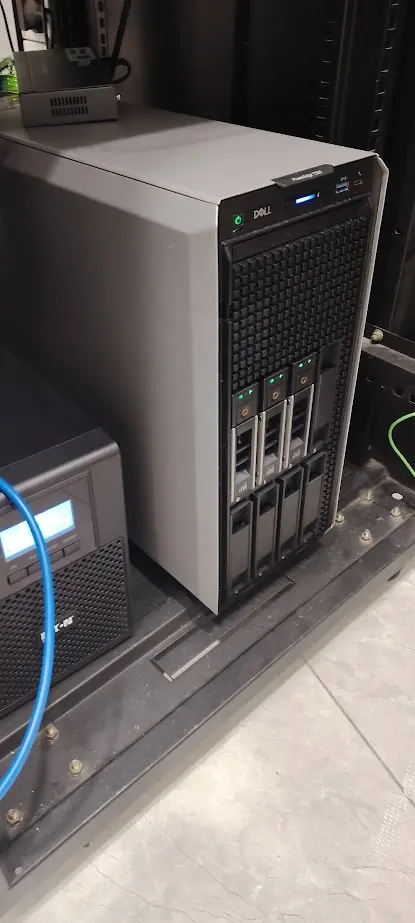
NETWORK & SERVERA more reliable business network.
The customer needed stable connections for computers, business systems and daily work. We arranged the network switch, server and UPS backup so important equipment stays organised and easier to maintain.
The completed setup gives the business a cleaner foundation for reliable operation and future expansion.
BUSINESS SERVER HARDWAREServer capacity prepared for demanding workloads.
We prepared enterprise rack servers for business systems, centralised storage, virtualisation and other demanding applications.
Each unit can be configured, tested and deployed according to the customer’s capacity, redundancy and future expansion requirements.
BUSINESS PCS & WORKSTATIONSComputers prepared for productive teams.
We supply and prepare business desktop computers and professional workstations for offices, technical users and growing teams.
Systems can be configured, tested and deployed with the required memory, storage, software and network settings for a smoother handover.
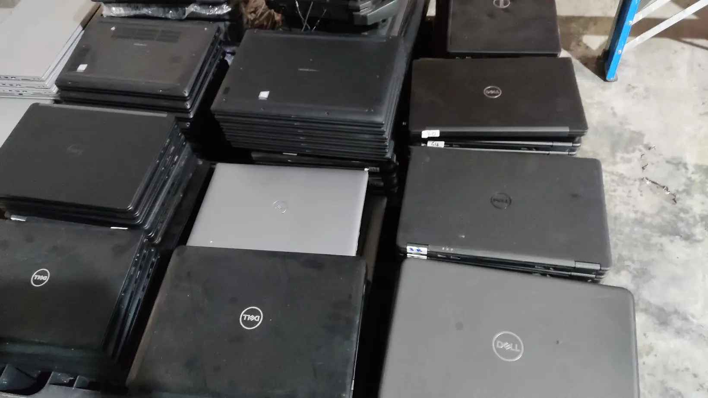
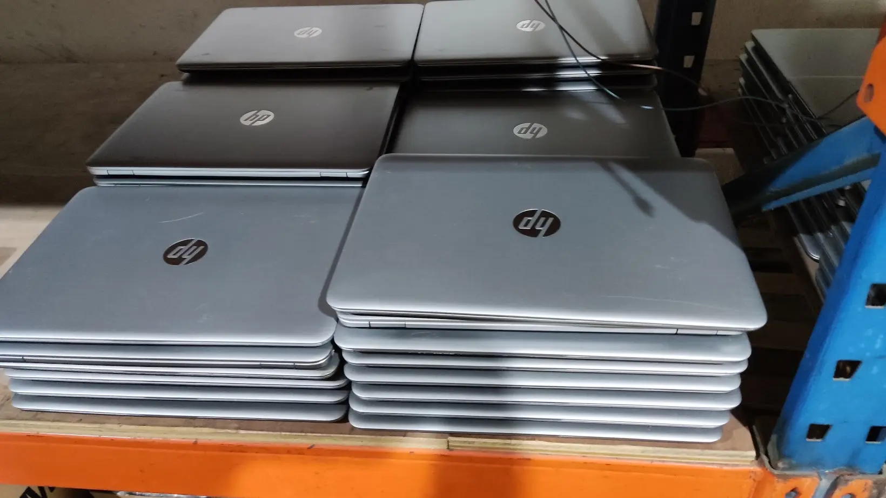
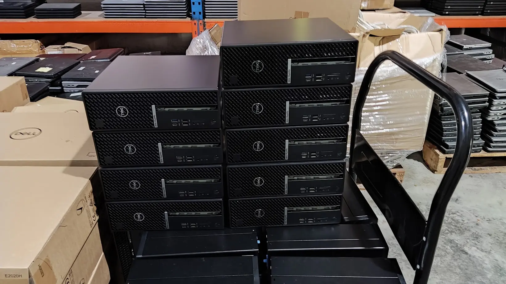
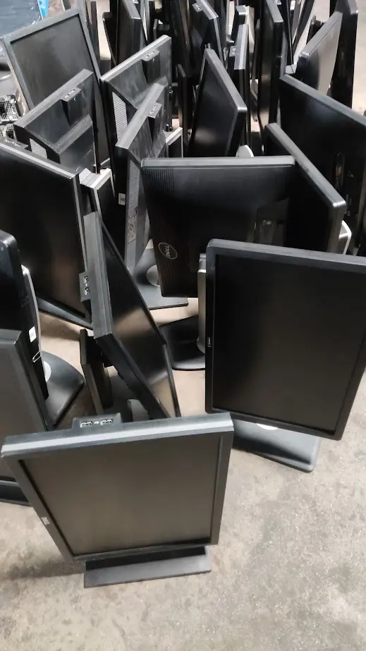
RECON PCS, LAPTOPS & MONITORSQuality business computers with dependable warranty support.
We supply quality-checked recon desktop PCs, laptops and monitors as a practical, cost-effective option for offices, production floors and growing business teams.
Each system is inspected, tested and prepared for deployment, with longer warranty options available according to the selected model and quotation.
LENOVO RACK-MOUNT SERVERReliable server performance for business systems.
This Lenovo ThinkSystem SR630 V3 rack-mount server was prepared for business applications, centralised data and demanding daily workloads.
We can configure, test and deploy the server according to the customer’s required processing power, memory, storage, redundancy and future expansion needs.
NETWORK RACK & SECURITYProtected, manageable network infrastructure.
We set up a central network rack with a business firewall, managed network switch, labelled connections and UPS backup for essential equipment.
This gives the customer a more secure and organised network that is easier to monitor, maintain and expand as the business grows.
STRUCTURED NETWORK CABLINGCentralised connections for stable operations.
We connected the customer’s computers and business devices through a central network switch inside the data rack.
The completed setup provides more reliable connections and makes future troubleshooting, maintenance and network expansion easier.
SMART DOOR ACCESSFlexible, controlled entry for staff and vendors.
We installed fingerprint and face-recognition access terminals to give authorised staff convenient entry without depending on normal keys.
QR access can also be provided to approved service vendors outside office hours—such as air-conditioning or water-filter technicians—without sharing permanent cards or physical keys.
COMMERCIAL CCTV INSTALLATIONCarefully positioned for better coverage.
Our technician installed the CCTV point and routed the required cabling at the customer’s commercial premises.
After installation, the camera position and connection were checked to provide dependable monitoring for the selected area.
URGENT NIGHT CCTV INSTALLATIONWorking after hours to meet the audit timeline.
The customer needed additional CCTV coverage completed urgently before an upcoming audit. Our team continued the factory installation at night to meet the required timeline.
Fast response and flexible scheduling helped the customer complete the necessary security preparation without delaying normal daytime operations.
NEW OFFICE CABLINGTechnology planned before move-in.
During the office renovation, we planned and pulled the required network and system cabling before the ceiling and interior work were completed.
Early preparation helps keep the finished office cleaner and ensures the necessary connection points are ready for computers, Wi-Fi and other business systems.
NETWORK BACKBONE & RACKCentral infrastructure built for expansion.
We routed the site’s main technology cabling to a central wall-mounted rack, creating a dedicated point for network and security equipment.
The protected cable routes make the system easier to organise, maintain and expand when the business adds more computers, Wi-Fi access points or CCTV cameras.
CAFÉ NETWORK, WI-FI & CCTVConnected and protected from opening day.
During the café renovation, we planned and routed cabling for the POS system, business network, Wi-Fi access points and CCTV cameras.
Preparing everything early helps the finished café stay cleaner while giving staff and customers reliable connectivity and providing better security coverage.
CCTV TROUBLESHOOTING & RESTORATIONFinding faults and restoring camera coverage.
The customer’s CCTV monitor showed several channels without video. Our technician checked the recorder, power connections and camera cabling to identify the affected points.
Systematic troubleshooting helps restore dependable monitoring and confirms which equipment or connections require further attention. Live camera views are blurred here to protect customer privacy.
COMMERCIAL CCTV MONITORINGOne screen. Complete site visibility.
We configured a multi-camera CCTV monitoring system so the customer can review important areas from one central display.
The completed setup provides clearer day-to-day oversight and makes camera checking more convenient. All live views shown here are blurred to protect the customer’s location, people and activities.
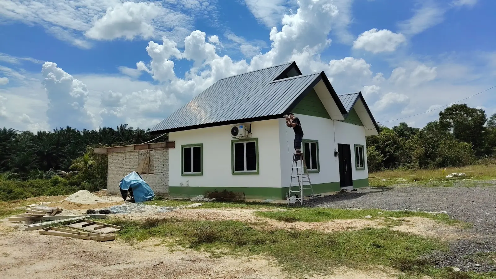
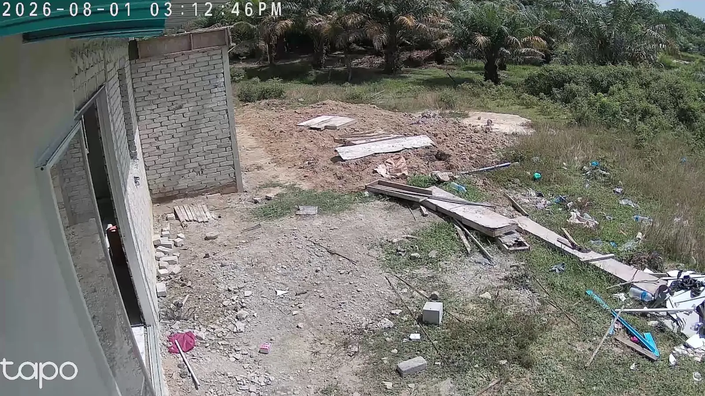
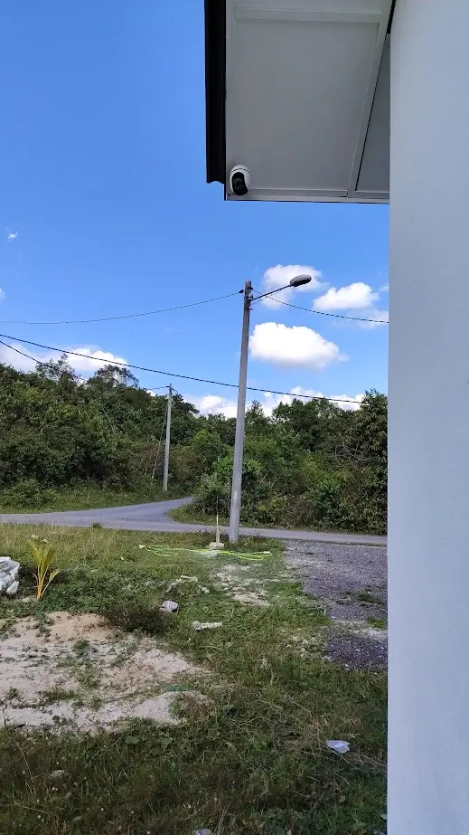
OUTSKIRT PROPERTY CCTVEven remote properties need reliable protection.
We installed outdoor CCTV at this outskirt property to monitor the building, entrance and surrounding land—even when the owner is away.
Clear remote visibility helps deter burglary and theft, while also allowing the owner to check for unwanted animal activity around the premises.
OUTDOOR WI-FI & WIRELESS LINKNetwork connectivity beyond the main building.
We prepared outdoor wireless equipment for a site that needed network coverage between separated areas without relying only on indoor Wi-Fi.
The weather-resistant unit and mounting hardware provide a practical foundation for extending connectivity to another building, guardhouse, warehouse area or outdoor operating zone.
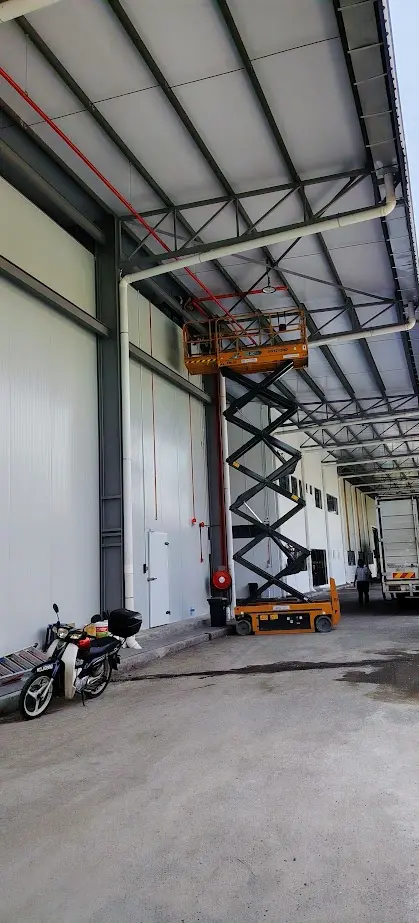
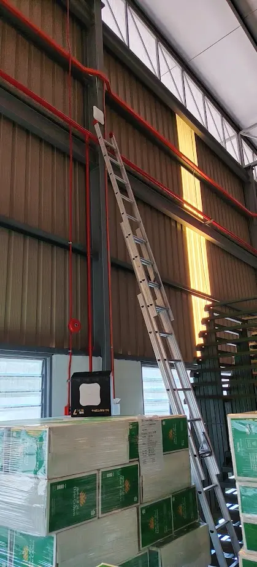
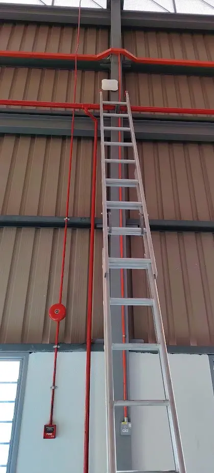
LARGE WAREHOUSE WI-FIStable wireless coverage across a bigger space.
We used suitable high-access equipment to install wireless access points at strategic elevated positions, providing wider and more reliable Wi-Fi coverage throughout this large warehouse.
Proper AP placement helps reduce dead zones caused by distance, stored goods and metal structures—supporting mobile devices, scanners and daily warehouse operations.
Every business site is different. Mobit Solution recommends equipment and installation methods based on the location, daily operation and practical budget—not a one-size-fits-all package.